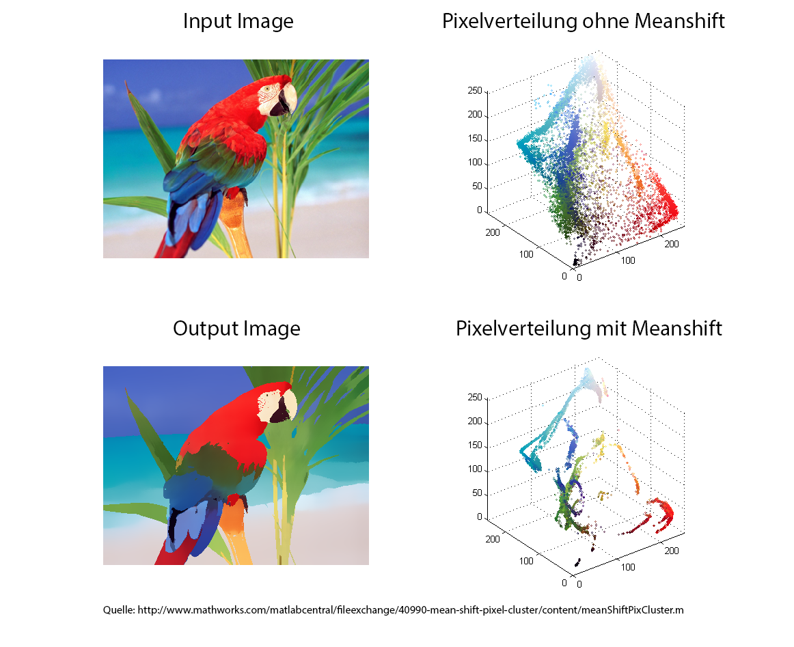
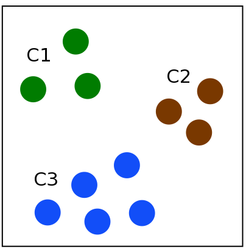
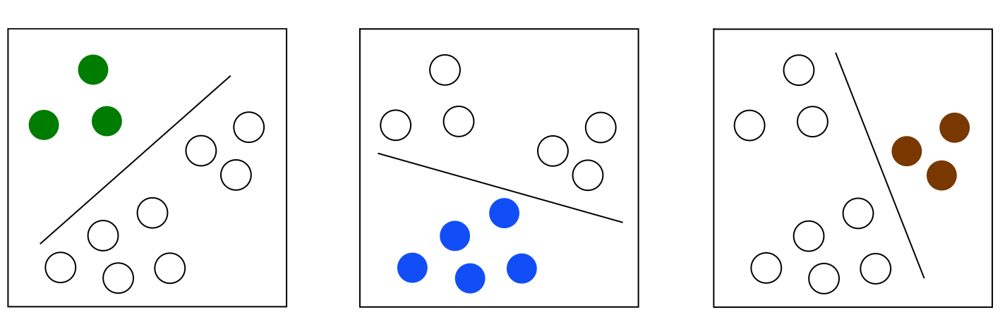
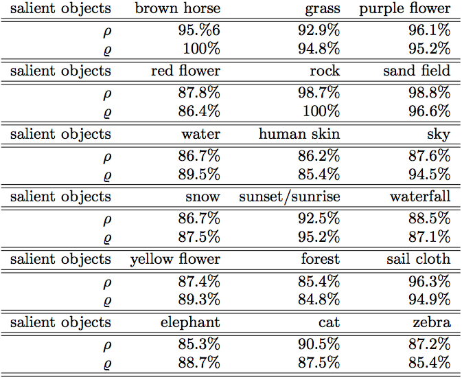
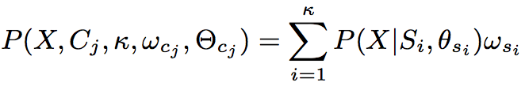
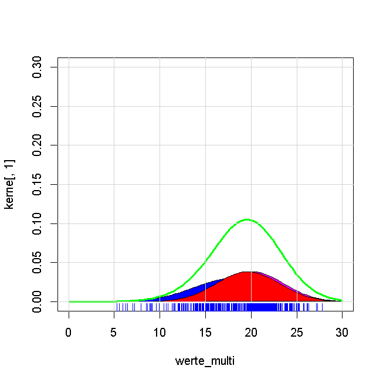
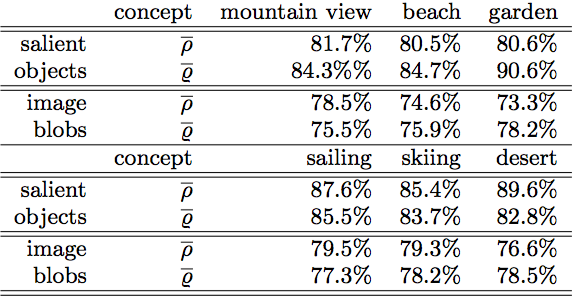

Gliederung
- Einblick
- Objekte
- Semantik
- Evaluierung
- Fazit
1. Einblick
Multi-Level Annotation of Natural Scenes UsingDominant Image Components and Semantic Concepts
Himmel
Schnee
Bergblick
Skifahren
Himmel
Wasser
Strand
Segeln
Wie können wir Tags klassifizieren?
Komponenten ...
und deren Ausdruck
Warum?
Performance
- Effizienz
- Genauigkeit
Ziel
Genaueres Taggen durch Objekterkennung und daraus abzuleitender Semantik2. Erkennung Objekte
Automatische Bildsegmentierung (Meanshift)
Klassenzuweisung mit Support Vector Machines (SVMs)
Testergebnisse
Automatische Bildsegmentierung (Meanshift)
- Feature Space
(z.B Farben oder Texturen) - Meanshift mit mehreren verteilten Windows

Demo
Daten
Support Vector Machines (SVMs)
Vorgehen
1. Test-Set für jede gewünschte Klasse
2. Bildern werden Klassen per Menschenhand zugeteilt
3. Anwenden der "one-against-all rule"
one-against-all rule
C1: Gras / C2: Stein / C3: Wasser
Paare: (Xl; C(Xl)) Feature X und die zugehörige Klasse
T = {(Xl, C(Xl)) | l = 1, ..., n; C(Xl) ∈ {C1, ..., Cn}}
one-against-all rule
C1 = sgn((w, Xl) + b)
C2 = sgn((w, Xl) + b)
C3 = sgn((w, Xl) + b)
Algorithmus lernt Merkmale des zu erkennenden Objektes!
Testergebnisse
Precision ρ versus recall ϱ
3. Ableitung von Semantik
Das "finite mixture model" (FFM)
Anwenden von "expectation-maximization" (EM)
Das "finite mixture model" (FFM)
- Semantische Klassenverteilung für visuelle Komponente X
- Einbezug von:
- Parametern: ωcj = {ωsi, i = 1, · · · , κ}
- Mischkomponenten: Θcj = {θsi, i = 1,··· , κ}
- κ: Optimale Anzahl der Mischkomponenten
- Wahrscheinlichkeit für einen semantischen Ausdruck Cj 
Expectation-maximization Algorithmus
1. Übernehmen der Initialkonfiguration
(Mittelwert, Abweichung, Größe) des Clusters

2. Kann X mit P Bestandteil von Si sein? (E-Step)
3. Anpassen der mixture components ωcj (M-Step)
Expectation-maximization Algorithmus
4. Evaluierung des Ergebnisses
- 35000 Bilder von Google
- 125000 Bilder von der Corel Imagedatenbank
- Testset für 15 semantische Klassen (z.B Garten, Strand)
- Jede Klasse kommt in 120 Bildern vor -> 1800 Bilder
- Testen der semantischen Klassifizierung mit Daten von Objekterkennung und Image Blobs / π: true positives
α = π / (π + τ)classification precision / τ: true negatives
β = π / (π + μ)classification recall / μ: false positives
Testergebnisse
Average precision ρ = ρ × α versus average recall ϱ = ϱ × β